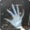

查看全部626个回答
- 
- 小米粉丝摘香菜
4716人赞同了该回答
半夜急诊手术，刚上大一的小姑娘，很瘦，蛮漂亮，还穿着军训的迷彩服，下身大出血，跟男友第一次xxoo，撕裂了，又不敢去医院，又是卫生纸又是卫生巾压不住，直到休克了才慌忙叫的救护车，签字的时候女孩妈妈气得手一直在发抖，血色素只有五克，输了血，几乎整个阴道壁全程撕裂，手术及术后恢复良好。男友父母也都到场了，全程低头认错。女儿贴心，风险大啊。。。小姑娘确实值得同情，当时救护车上的医生是我急诊ICU的女同事，刚毕业的丫头片子，看见女孩躺在血泊里，立马开启狂暴模式，指着男生鼻子开骂，骂完了不解恨，开始就男生教育问题教训他父母，一家三口跟小学生一样面红耳赤被她教训了一路，好在男生看起来比较老实，父母也都是大学教授，涵养很好，住院期间一直在陪护，女孩父母后面也就没再追究了，不知道出院后怎么样了，希望他们能在一起 无独有偶，第二年我去院前急救轮转，接到报警，xx快捷酒店，一女生搀着一个清秀男生捂着下身在楼下等我们，上车我给男生扒了裤子检查，下身全是血，龟头系带完全断裂，女生全程捂脸，脖子都是红的，路上男生一直在抹眼泪，带着哭腔问我:我第一次啊，谁知道会弄成这样，医生我不会有事吧。女生安慰道:多大的事啊，哭啥哭，我会对你负责的，我:。。。。。。这个男生没啥事，出血量跟上面的女生不是一个量级的，叫个泌外医生缝两针，顺便把包皮一起做了，我全程憋着笑送他去医院的，后来他女友憋不住也笑场了，女友和医生很开心，小男生在抹眼泪，画风好怪异啊
半夜急诊手术，刚上大一的小姑娘，很瘦，蛮漂亮，还穿着军训的迷彩服，下身大出血，跟男友第一次xxoo，撕裂了，又不敢去医院，又是卫生纸又是卫生巾压不住，直到休克了才慌忙叫的救护车，签字的时候女孩妈妈气得手一直在发抖，血色素只有五克，输了血，几乎整个阴道壁全程撕裂，手术及术后恢复良好。男友父母也都到场了，全程低头认错。女儿贴心，风险大啊。。。小姑娘确实值得同情，当时救护车上的医生是我急诊ICU的女同事，刚毕业的丫头片子，看见女孩躺在血泊里，立马开启狂暴模式，指着男生鼻子开骂，骂完了不解恨，开始就男生教育问题教训他父母，一家三口跟小学生一样面红耳赤被她教训了一路，好在男生看起来比较老实，父母也都是大学教授，涵养很好，住院期间一直在陪护，女孩父母后面也就没再追究了，不知道出院后怎么样了，希望他们能在一起 无独有偶，第二年我去院前急救轮转，接到报警，xx快捷酒店，一女生搀着一个清秀男生捂着下身在楼下等我们，上车我给男生扒了裤子检查，下身全是血，龟头系带完全断裂，女生全程捂脸，脖子都是红的，路上男生一直在抹眼泪，带着哭腔问我:我第一次啊，谁知道会弄成这样，医生我不会有事吧。女生安慰道:多大的事啊，哭啥哭，我会对你负责的，我:。。。。。。这个男生没啥事，出血量跟上面的女生不是一个量级的，叫个泌外医生缝两针，顺便把包皮一起做了，我全程憋着笑送他去医院的，后来他女友憋不住也笑场了，女友和医生很开心，小男生在抹眼泪，画风好怪异啊
- 758条评论
- 分享
- 收藏
- 感谢
- ...
- 阅读全文